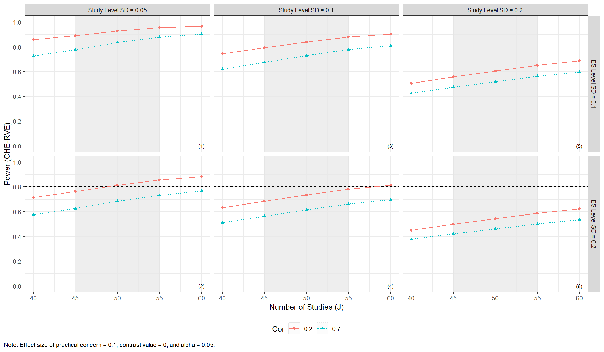
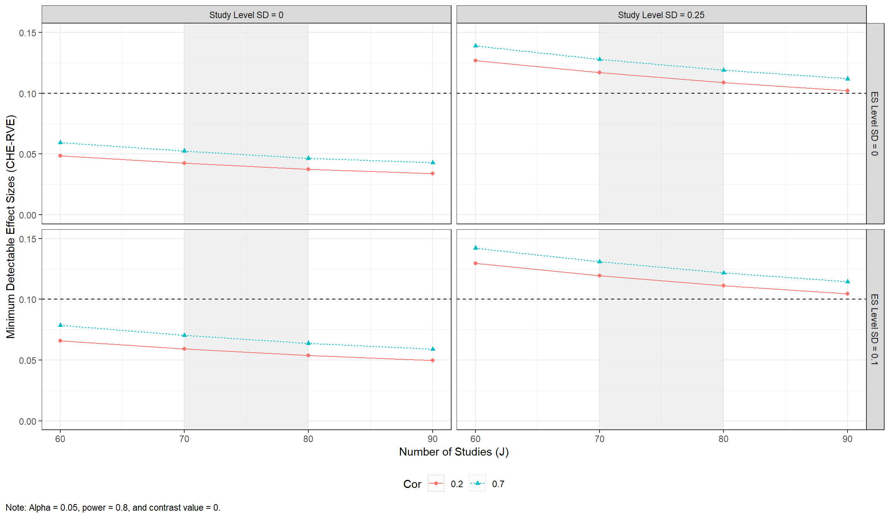
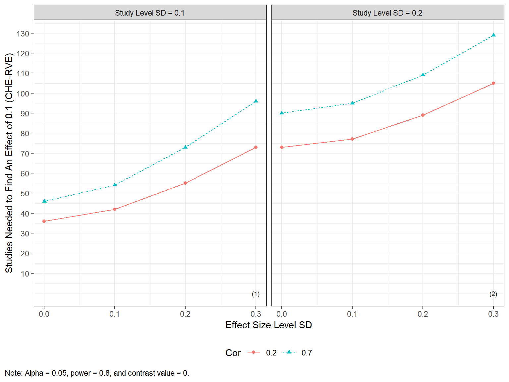
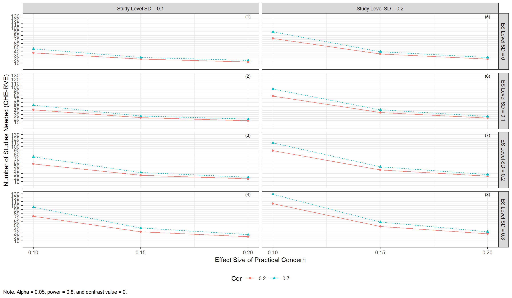
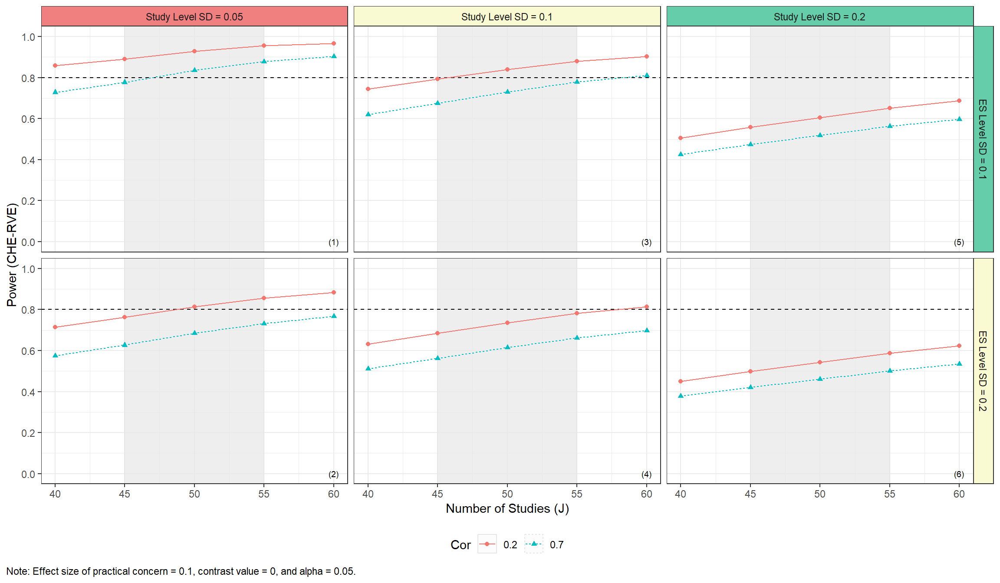
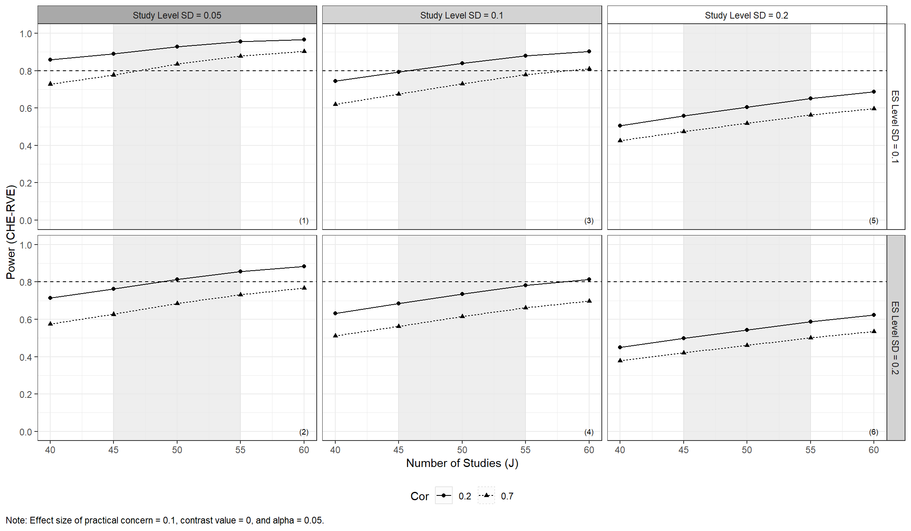
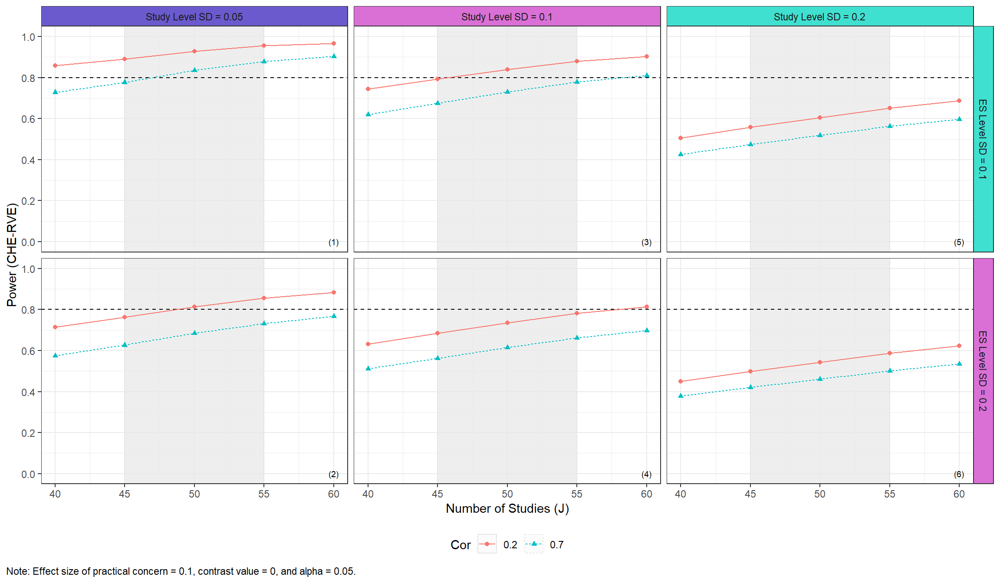

POMADE: Power Approximation for the Overall Average Effect in Meta-Analysis With Dependent Effect Sizes
The POMADE package provides functions for conducting power analysis for tests based on the correlated-hierarchical effects (CHE; Pustejovsky & Tipton, 2021), multi-level meta-analysis (MLMA; Van den Noortgate et al., 2013), and correlated-effects (CE; Hedges et al., 2010) models for meta-analysis of dependent effect sizes, with the possibility to vary assumptions about the variance estimation and the estimation of the degrees of freedom. These approximations aim to replace Hedges & Pigott’s (2001) previous power approximation based on the assumption of independence between effect sizes, which has been shown to work inadequately to predict power for models that handle dependent effect sizes (Vembye, Pustejovsky, & Pigott, 2022). The package also includes functions for creating graphical displays of power analysis results. Find more detail how to conduct reliable power analyses for meta-analysis in Vembye, Pustejovsky, & Pigott (2024).
Installation
Install the latest release from CRAN:
install.packages("POMADE")You can install the development version from GitHub with:
# install.packages("devtools")
devtools::install_github("MikkelVembye/POMADE")Examples
Calculating power
We approximate power for the test of the overall average effect size, based on the CHE-RVE model (Pustejovsky & Tipton, 2021). We assume that study sample sizes and the number of reported effect sizes per study are similar to those from a recent meta-analysis examining the effects of co-teaching on academic achievement.
library(POMADE)
library(dplyr)
# Find more information about this dataset by executing the following command below
# ?VWB23_pilot
coteach_dat <- VWB23_pilot
#glimpse(coteach_dat)
dat_kjsigma2j <- select(coteach_dat, kj, sigma2j = vg_ms_mean)
power_CHE_RVE_empirical <-
power_MADE(
J = seq(40, 60, 5),
mu = 0.1,
tau = c(0.05, 0.1, 0.2),
omega = c(0.1, 0.2),
rho = c(0.2, 0.7),
alpha = 0.05,
sigma2_dist = dat_kjsigma2j$sigma2j,
n_ES_dist = dat_kjsigma2j$kj,
model = "CHE", # Default
var_df = "RVE", # Default
iterations = 10, # default = 100 (recommended)
seed = 10052510
)
power_CHE_RVE_empirical |>
select(J, tau, omega, rho, power, mcse) |>
head(10)
#> # A tibble: 10 × 6
#> J tau omega rho power mcse
#> <dbl> <dbl> <dbl> <dbl> <dbl> <dbl>
#> 1 40 0.05 0.1 0.2 0.858 0.0168
#> 2 40 0.05 0.1 0.7 0.728 0.0265
#> 3 40 0.05 0.2 0.2 0.715 0.0144
#> 4 40 0.05 0.2 0.7 0.575 0.0165
#> 5 40 0.1 0.1 0.2 0.744 0.0152
#> 6 40 0.1 0.1 0.7 0.620 0.0204
#> 7 40 0.1 0.2 0.2 0.632 0.0117
#> 8 40 0.1 0.2 0.7 0.512 0.0127
#> 9 40 0.2 0.1 0.2 0.504 0.00864
#> 10 40 0.2 0.1 0.7 0.425 0.00989The results can be displayed in a plot to more easily assess power across a range of plausible scenarios.
power_CHE_RVE_plot <-
plot_MADE(
power_CHE_RVE_empirical,
power_min = .8,
expected_studies = c(45, 55)
)
power_CHE_RVE_plot
Minimum detectable effect size (MDES)
Another approach to power analysis focuses on determining the minimum detectable effect size (MDES) with a preset levels of significance and power. This can obtained using mdes_MADE().
mdes_CHE_RVE_empirical <-
mdes_MADE(
J = seq(60, 90, 10),
tau = c(0, 0.25),
omega = c(0, 0.1),
rho = c(0.2, 0.7),
target_power = .8,
alpha = 0.05,
sigma2_dist = dat_kjsigma2j$sigma2j,
n_ES_dist = dat_kjsigma2j$kj,
model = "CHE", # Default
var_df = "RVE", # Default
iterations = 10, # Default = 100 (recommended)
seed = 10052510
)
mdes_CHE_RVE_empirical |>
select(J, tau, omega, rho, target_power, MDES) |>
head(10)
#> # A tibble: 10 × 6
#> J tau omega rho target_power MDES
#> <dbl> <dbl> <dbl> <dbl> <dbl> <dbl>
#> 1 60 0 0 0.2 0.8 0.0484
#> 2 60 0 0 0.7 0.8 0.0594
#> 3 60 0 0.1 0.2 0.8 0.0658
#> 4 60 0 0.1 0.7 0.8 0.0786
#> 5 60 0.25 0 0.2 0.8 0.127
#> 6 60 0.25 0 0.7 0.8 0.139
#> 7 60 0.25 0.1 0.2 0.8 0.130
#> 8 60 0.25 0.1 0.7 0.8 0.142
#> 9 70 0 0 0.2 0.8 0.0424
#> 10 70 0 0 0.7 0.8 0.0525The MDES data can then be plotted across plausible scenarios.
MDES_CHE_RVE_plot <-
plot_MADE(
data = mdes_CHE_RVE_empirical,
es_min = 0.10,
expected_studies = c(70, 80),
numbers_ynudge = 0.159
)
MDES_CHE_RVE_plot 
Finding the number of studies needed to obtain a certain amount of power
The power approximation formulas can, furthermore, be used to understand how many studies are needed to find a given effect size considered to be of practical concern with a given amount of power. This can be conducted via min_studies_MADE().
min_studies_example <-
min_studies_MADE(
mu = c(0.1, 0.15, 0.2),
tau = c(0.1, 0.2),
omega = c(0, 0.1, 0.2, 0.3),
rho = c(0.2, 0.7),
target_power = .8,
alpha = 0.05,
sigma2_dist = dat_kjsigma2j$sigma2j,
n_ES_dist = dat_kjsigma2j$kj,
model = "CHE", # Default
var_df = "RVE", # Default
iterations = 10, # Default = 100 (recommended)
seed = 10052510,
)
min_studies_example |>
select(mu, tau, omega, rho, target_power, studies_needed) |>
head(10)
#> # A tibble: 10 × 6
#> mu tau omega rho target_power studies_needed
#> <dbl> <dbl> <dbl> <dbl> <dbl> <dbl>
#> 1 0.1 0.1 0 0.2 0.8 36
#> 2 0.1 0.1 0 0.7 0.8 46
#> 3 0.1 0.1 0.1 0.2 0.8 42
#> 4 0.1 0.1 0.1 0.7 0.8 54
#> 5 0.1 0.1 0.2 0.2 0.8 55
#> 6 0.1 0.1 0.2 0.7 0.8 73
#> 7 0.1 0.1 0.3 0.2 0.8 73
#> 8 0.1 0.1 0.3 0.7 0.8 96
#> 9 0.1 0.2 0 0.2 0.8 73
#> 10 0.1 0.2 0 0.7 0.8 90and plotted via

Alternatively, reviewers can investigate how the number of studies needed varies across various values of the effect size of practical concern.
min_studies_plot2 <-
plot_MADE(
min_studies_example
)
min_studies_plot2
Traffic light power plot
Traffic light plots add a graphical representation of the likelihood of different assumptions made by the meta-analyst. They can be specified in plot_MADE(), as below. Assumptions should be specified from the upper left to the lower right facet grid plot.
plot_MADE(
power_CHE_RVE_empirical,
power_min = .8,
expected_studies = c(45, 55),
traffic_light_assumptions = c("unlikely", "likely", "expected", "expected", "likely")
)
Traffic light color palettes
The above type of plot can also be made with a grey-scale palette, which may be preferable for viewers with color blindness, by setting traffic_light_palette = "greyscale". With this palette, white indicates the expected scenario, light gray indicates other plausible scenarios, and dark gray indicates other, even less likely scenarios.
plot_MADE(
power_CHE_RVE_empirical,
power_min = .8,
expected_studies = c(45, 55),
traffic_light_assumptions = c("unlikely", "likely", "expected", "expected", "likely"),
traffic_light_palette = "greyscale",
color = FALSE
)
Users may also specify their own color palettes for the traffic light strips by passing a named vector of colors to traffic_light_plot, as in the following:
plot_MADE(
power_CHE_RVE_empirical,
power_min = .8,
expected_studies = c(45, 55),
traffic_light_assumptions = c("unlikely", "likely", "expected", "expected", "likely"),
traffic_light_palette = c(
expected = "turquoise",
likely = "orchid",
unlikely = "slateblue"
)
)
Parallel processing
The core functions of the package allow for parallel processing via the future and furrr packages.
library(future)
plan(sequential)
system.time(
res_seq <-
mdes_MADE(
J = seq(60, 90, 10),
tau = c(0, 0.25),
omega = c(0, 0.1),
rho = 0.7,
target_power = .8,
alpha = 0.05,
sigma2_dist = dat_kjsigma2j$sigma2j,
n_ES_dist = dat_kjsigma2j$kj,
iterations = 100,
seed = 10052510
)
)
#> user system elapsed
#> 21.13 0.48 22.16
plan(multisession, workers = 2)
system.time(
res_par <-
mdes_MADE(
J = seq(60, 90, 10),
tau = c(0, 0.25),
omega = c(0, 0.1),
rho = 0.7,
target_power = .8,
alpha = 0.05,
sigma2_dist = dat_kjsigma2j$sigma2j,
n_ES_dist = dat_kjsigma2j$kj,
iterations = 100,
seed = 10052510
)
)
#> user system elapsed
#> 0.95 0.75 15.99
identical(res_seq, res_par)
#> [1] TRUEReferences
Hedges, L. V., & Pigott T. D. (2001). The power of statistical tests in meta-analysis. Psychological Methods, 6(3), 203-217. https://doi.org/10.1037/1082-989X.6.3.203
Hedges, L. V., Tipton, E., & Johnson, M. C. (2010). Robust variance estimation in meta‐regression with dependent effect size estimates. Research Synthesis Methods, 1(1), 39–65. https://doi.org/10.1002/jrsm.5
Pustejovsky, J. E., & Tipton E. (2021). Meta-analysis with robust variance estimation: Expanding the range of working models. Prevention Science, 23(1), 425-438. https://doi.org/10.1007/s11121-021-01246-3
Van den Noortgate, W., López-López, J., Marín-Martínez, F., & Sánchez-Meca, J. (2013). Three-level meta-analysis of dependent effect sizes. Behavior Research Methods, 45(2), 576–594. https://doi.org/10.3758/s13428-012-0261-6
Vembye, M. H., Pustejovsky, J. E., & Pigott, T. D. (2022). Power approximations for overall average effects in meta-analysis with dependent effect sizes. Journal of Educational and Behavioral Statistics, 1–33. https://doi.org/10.31222/osf.io/6tp9y
Vembye, M. H., Pustejovsky, J. E., & Pigott, T. D. (2024). Conducting Power Analysis for Meta-Analysis of Dependent Effect Sizes: Common Guidelines and an Introduction to the POMADE R package. MetaArXiv. https://osf.io/preprints/metaarxiv/3x2en